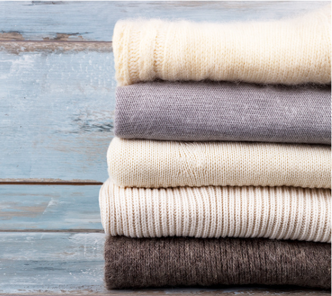

Мода
Украсят ваш гардероб: 5 модных кардиганов на осень и зиму, за которыми охотятся все
Кардиган — база в осеннем гардеробе. Его можно носить не только на голое тело, как предлагают сегодня современные модные бренды, но и поверх топов, лонгсливов и бадлонов. Разнообразие кофты на пуговицах удивляет: дизайнеры ищут вдохновение в прошлом столетии и предлагают современным девушкам самые разные фасоны — от классических свободных до облегающих на одной застежке.
В новом осенне-зимнем сезоне 2023/24 тренд на кардиганы можно проследить в коллекциях самых модных марок: Loewe, Miu Miu, Khaite и многих других. А если вы посмотрите на стритстайлы с Недель моды, то заметите самые необычные и яркие приемы их стилизации.
Кардиган в длине макси является одним из самых трендовых вариантов в этом сезоне. Его рекомендуется носить в качестве второго слоя и желательно его не застегивать, чтобы визуально создать более расслабленный образ и в то же время корректировать и вытягивать силуэт. Это может быть объемный вариант крупной вязки в сочетании с джинсами и футболкой или брючным костюмом. Присмотритесь также к более тонкой вязке — такой кардиган носите с трикотажным платьем или шелковой комбинацией.
Также стоит обратить на стилизацию прилегающих и полуприлегающих моделей из тонкого качественного трикотажа, который в этом сезоне можно носить на голое тело или в сочетании с майкой-алкоголичкой. Обратите внимание на детали: в тренде удлиненные рукава, закрывающие запястья, что придает утонченность и женственность образу (читайте также: Курс на утепление: как носить трикотажные вещи в офис).

10 наивных вопросов о кашемире и профессиональных ответов на них
Каждый, кто хотя бы раз надевал кашемировый свитер, сможет подтвердить: мягче и приятнее материала просто не существует. Кашемир — это синоним удобства, тепла и приятных ощущений при носке, и вопреки распространенному мнению — не только зимой. Своим названием этот материал обязан индийскому штату Кашмир, где, как гласит легенда, и стали впервые его производить. В средние века и в Новое время, когда кашемир приобрел исключительную популярность в Европе, даже платок был роскошью, доступной лишь представителям высшей аристократии и королевских домов.
С тех пор прошло много времени, но до сих пор относительно кашемира существует множество неясностей, а иногда и откровенных предрассудков. Кое-кто уверен, что кашемир даже в наши дни — неподъемно дорого, а кто-то (да, не удивляйтесь) считает, что свитеры из этой теплой ткани — предмет одноразовой носки. Развеять стереотипы и ответить на 10 наивных вопросов о кашемире мы попросили признанного эксперта в работе с этим непростым материалом — дизайнера Светлану Тегин.
Чем кашемир отличается от обычной шерсти?
Кашемир и шерсть получают от разных видов животных. Шерсть — это волосяной покров овечек, и его сбривают. Кашемир — это подшерсток, пух, который вычесывают только из коз, обитающих в Монголии и Внутренней Монголии. Их поголовье в этих регионах очень ограничено, в то время как овцы — широко распространенный вид.
Кашемир в 8 раз теплее шерсти, но при разведении кашемировых коз в других странах их пух теряет свои полезные качества. Только суровый климат Монголии (летом температура поднимается до +40, а зимой опускается до -50 градусов по Цельсию) делает возможным образование у коз необходимого подшерстка. Тончайшие ворсинки (длиной до 5 мм, толщиной до 14 микрон) — очень легкие, потому что они полые внутри. Они и создают воздушную тепловую защиту.